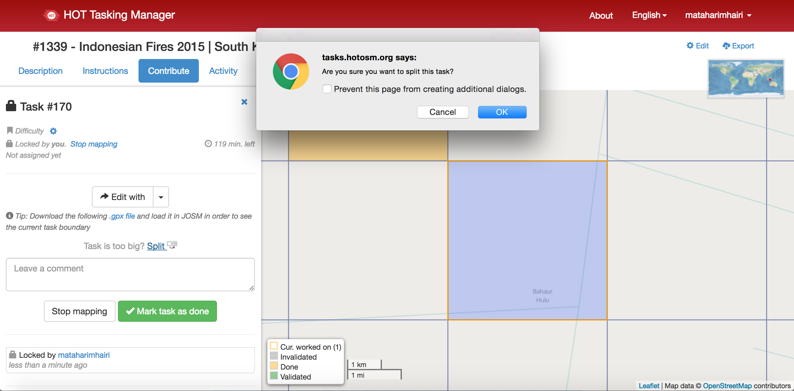

Deforestation
ENGThis site is designed to provide guidance on how to map logging related features on OpenStreetMap (OSM) in order to capture the location and extent of deforestation in Sumatra and Kalimantan. Indonesia has the world's 3rd largest tropical rainforest, but is ranked 2nd for deforestation. Half of Sumatra's forest cover disappeared from 1985 to 2008, and 90% of oil plantation in Kalimantan from 1990-2010 came at the expense of forest cover. This project was initiated by the devastating 2015 fires in Kalimantan that were linked to deforestation, and the desire of the Green School students in Bali to assist their neighbours with their struggle. A Tasking Manager project was created to coordinate the mapping efforts and capture all the data in OpenStreetMap, which ensures all the data is freely available for everyone to access, edit, and redistribute any way they see fit.
INDSitus ini dirancang untuk memberikan panduan tentang bagaimana untuk memetakan penebangan fitur terkait di OpenStreetMap (OSM) untuk menangkap lokasi dan luasnya deforestasi di Sumatera dan Kalimantan. Indonesia memiliki 3 terbesar hutan hujan tropis di dunia, tetapi peringkat 2 untuk deforestasi. Setengah dari tutupan hutan Sumatera menghilang 1985-2008, dan 90 % dari perkebunan sawit di Kalimantan 1990-2010 datang dengan mengorbankan tutupan hutan. Proyek ini diprakarsai oleh menghancurkan 2015 kebakaran di Kalimantan yang terkait dengan deforestasi, dan keinginan siswa Green School di Bali untuk membantu tetangga mereka dengan perjuangan mereka. Sebuah proyek Tasking Manager diciptakan untuk mengkoordinasikan upaya pemetaan dan menangkap semua data dalam OpenStreetMap, yang menjamin semua data secara bebas tersedia untuk semua orang untuk mengakses, mengedit, dan mendistribusikan cara apapun yang mereka mau.
Go to top of pageKalimantan Fires
ENGWhen left undisturbed, the forests of Kalimantan are not usually prone to fires, but as they are opened up by deforestation they dry out and become increasingly susceptible to fires. A huge contributor to this is the construction of ariticial canals that are used to transport logged forest, which then further drains the area of moisture. Forest fires occur annually across Indonesia, but 2015 was the worst year with hazardous levels of air pollution reaching more than 2,000 at times - anything above 300 is considered a health hazardous based on the Pollution Standard Index. Often started to clear forest for plantations, areas of Sumatra and Kalimantan burned for weeks, sending heavy haze across the region. The Indonesian health ministry quoted hundreds of thousands of people suffering from respiratory illnesses after breathing in hazardous smoke caused by peatland fires.
INDKetika meninggalkan terganggu, hutan Kalimantan biasanya tidak rawan kebakaran, tetapi karena mereka dibuka oleh deforestasi mereka kering dan menjadi semakin rentan terhadap kebakaran. Seorang kontributor besar untuk ini adalah pembangunan kanal ariticial yang digunakan untuk mengangkut hutan bekas tebangan, yang kemudian lebih lanjut mengaliri wilayah kelembaban. Kebakaran hutan terjadi setiap tahun di seluruh Indonesia, tapi 2015 adalah tahun terburuk dengan tingkat berbahaya dari polusi udara mencapai lebih dari 2,000 di kali - apa pun di atas 300 dianggap kesehatan yang berbahaya berdasarkan Indeks Standard Pencemaran. Sering mulai membuka hutan untuk perkebunan , daerah Sumatera dan Kalimantan terbakar selama berminggu-minggu, mengirimkan kabut berat di seluruh wilayah. Kementerian Kesehatan Indonesia dikutip ratusan ribu orang yang menderita penyakit pernapasan setelah menghirup asap berbahaya yang disebabkan oleh kebakaran lahan gambut.
Go to top of pageHOT Tasking Manager

ENG
The Tasking Manager is a coordination tool designed and built for the collaborative mapping efforts of the Humanitarian OpenStreetMap Team (HOT). The purpose of the tool is to divide up a mapping project in OSM into smaller tasks that can be completed rapidly and systematically so that the same area is not worked on by numerous people creating data that conflicts itself. It shows which areas need to be mapped and which areas need to be validated. This approach facilitates the distribution of mapping tasks to many mappers simultaneously during a crisis to quickly provide base map data to responding organisations. It also permits prioritisation of areas and promotes quality and uniformity of the work done such as which elements to cover and specific tags to use.
INDTasking Manager adalah alat koordinasi dirancang dan dibangun untuk upaya pemetaan kolaboratif Humanitarian OpenStreetMap Team (HOT). Tujuan dari alat ini adalah untuk membagi proyek pemetaan di OpenStreetMap menjadi tugas-tugas kecil yang dapat diselesaikan dengan cepat dan sistematis sehingga area yang sama tidak bekerja pada oleh banyak orang membuat data yang bertentangan itu sendiri. Ini menunjukkan daerah yang perlu dipetakan dan daerah mana perlu divalidasi. Pendekatan ini memfasilitasi distribusi tugas pemetaan untuk banyak pembuat peta secara bersamaan selama krisis dengan cepat memberikan data peta dasar untuk organisasi merespon. Hal ini juga memungkinkan prioritas daerah dan mempromosikan kualitas dan keseragaman kerja yang dilakukan seperti yang elemen untuk menutupi dan tag khusus untuk digunakan.
Go to top of pageSign Up To OpenStreetMap
ENGOpenStreetMap (OSM) is a collaborative project that aims to create a free geospatial database of the entire world. It is registered under the ODbL license which means it is open for everyone to access, use, manipulate, contribute to and redistribute in any form. For more information on why OSM is so great and why we should all be using it, check out this article by the Guardian and this blog post by Mapbox. Please also check out the Missing Maps
INDOpenStreetMap (OSM) adalah proyek kolaborasi yang bertujuan untuk membuat database geospasial bebas dari seluruh dunia. Hal ini terdaftar di bawah lisensi ODbL yang berarti terbuka untuk semua orang untuk mengakses, menggunakan, memanipulasi, berkontribusi dan mendistribusikan dalam bentuk apapun. Untuk informasi lebih lanjut tentang mengapa OSM begitu besar dan mengapa kita semua harus menggunakannya, lihat artikel ini dengan Guardian dan posting blog ini dengan Mapbox.
ENG 'Login' or 'Sign Up' an account with OpenStreetMap. If you don't have an account, you need to register by clicking on the 'Sign Up' button at the top-right corner of the page.
IND 'Login' atau 'Sign Up' rekening dengan OpenStreetMap. Jika anda tidak memiliki akun, anda harus mendaftar dengan mengklik tombol 'Sign Up' di sudut kanan atas halaman.
ENG Please register by supplying an 'Email Address', 'Display Name' and a 'Password'. Alternatively, you can use a third party such as Google or Facebook to login.
IND Silahkan mendaftar dengan memasok 'Alamat Email' , 'Display Name' dan 'Password'. Atau, Anda dapat menggunakan pihak ketiga seperti Google atau Facebook untuk login.
Go to top of pageHow to Start Mapping
 ENG 1.
ENG 1.The Tasking Manager is split into 5 tabs, with the first one ‘Description’ providing information about the specific project.
IND 1.Tasking Manager dibagi menjado 5 tab, dengan yang pertama ‘Keterangan’ memberikan informasi tentang proyek tertentu.
 ENG 2.
ENG 2.The second tab ‘Instructions’ will tell the user what features to map and what tags to use.
IND 2.Tab kedua ‘Pentunjuk’ akan memberitahu pengguna apa fitur untuk memetakan dan apa tag untuk digunakan.
 ENG 3.
ENG 3.The third tab ‘Contribute’ is where the user can select a square task to lock and map.
IND 3.Tab ketiga ‘Sumbang’ adalah di mana pengguna dapat memilih tugas persegi untuk mengunci dan peta.
 ENG 4.
ENG 4.The fourth tab ‘Activity’ is where information regarding the status of tasks can be viewed, such as who has locked a square or marked it as done.
IND 4.Tab keempat ‘Kegiatan’ adalah di mana informasi mengenai status tugas dapat dilihat, seperti yang telah terkunci persegi atau ditandai sebagai selesai.
 ENG 5.
ENG 5.Kelima tab ‘Statistik’ memberikan informasi statistik lebih mengenai proyek keseluruhan melihat kontribusi dari waktu ke waktu.
IND 5.Lapisan fitur harus 'Pelecehan'. Silahkan pilih jenis insiden sebagai 'Stalking', 'Verbal' atau 'Physical' sebagai nama.
 ENG 6.
ENG 6.To start mapping through the ‘Contribute’ tab you must first be logged in to OpenStreetMap. Do this by clicking on the ‘login to OpenStreetMap’ link in the top right corner of the window. If you don't have an account yet, please go to the Sign Up to OpenStreetMap section for guidance on how to register.
IND 6.Untuk memulai pemetaan melalui tab 'Sumbang' anda harus terlebih dahulu login ke OpenStreetMap. Lakukan ini dengan mengklik 'login ke OpenStreetMap' di sudut kanan atas jendela. Jika anda tidak memiliki account, silakan pergi ke Mendaftar ke OpenStreetMap untuk panduan tentang bagaimana untuk mendaftar.
 ENG 7.
ENG 7.Once logged in, select the ‘Take a task at random’ button on the left hand side of the window.
IND 7.Setelah login , pilih 'Ambil tugas secara acak' tombol di sisi kiri jendela.
 ENG 8.
ENG 8.The Tasking Manager will automatically select a random square. Once it is highlighted in blue, click the green ‘Start mapping’ button.
IND 8.The Tasking Manager akan secara otomatis memilih persegi acak. Setelah disorot dengan warna biru, klik tombol hijau 'Mulai pemetaan'.
 ENG 9.
If you are a beginner it is recommended that you further split the square to reduce the mapping area. Click 'Split' in the middle of the left hand side of the window and select ‘OK’ in the pop-up.
IND 9.Jika Anda seorang pemula dianjurkan bahwa anda lebih lanjut membagi persegi untuk mengurangi daerah pemetaan. Klik 'Berpisah' di tengah-tengah sisi kiri jendela dan pilih 'OK' di pop-up.
ENG 10.
The square will then be split into another 4 squares. Select one and once it is highlighted blue, click 'Start mapping'.
IND 10.Alun-alun kemudian akan dibagi menjadi lain 4 kotak. Pilih salah satu dan setelah itu disorot biru, klik 'Mulai pemetaan'.
 ENG 11.
ENG 11.The task square will now be locked by you for mapping. With the ‘Mark task as done’ button available for you to select once you have mapped all the features requested in the ‘Instructions’ tab.
IND 11.Tugas persegi sekarang akan dikunci oleh Anda untuk pemetaan. Dengan 'Mark tugas sebagai selesai' tombol yang tersedia bagi anda untuk memilih setelah anda telah memetakan semua fitur yang diminta dalam tab 'Petunjuk'.
ENG 12.
Select the Edit button and a drop-down with a list of editors will appear. Scroll down and choose ‘iD editor’. The iD Editor application provides satellite imagery as a base layer which can then be mapped by tracing roads and buildings on top of.
IND 12.Pilih tombol Edit dan drop-down dengan daftar editor akan muncul. Gulir ke bawah dan pilih 'iD Editor'. Aplikasi iD Editor memberikan citra satelit sebagai lapisan dasar yang kemudian dapat dipetakan dengan menelusuri jalan dan bangunan di atas.
ENG 13.
This will launch the in-browser OpenStreetMap editor. Please ‘Start the Walkthrough’ if you are a beginner as it will show you how to navigate and use the editor to get mapping!
IND 13.Ini akan meluncurkan di -browser OpenStreetMap Editor. Silakan 'Mulai Walkthrough' jika anda seorang pemula karena akan menunjukkan cara untuk menavigasi dan menggunakan editor untuk mendapatkan pemetaan!
Go to top of pageMissing Maps
ENG
The Missing Maps project is a humanitarian effort aimed at mapping the most vulnerable places in the developing world, so that local and international NGOs, and individuals can use the maps and data to better respond to crises affecting the areas. It was concieved to support OpenStreetMap, and specifically the Humanitarian OpenStreetMap Team (HOT), in developing technologies, skills, workflows and communities in order to achieve this. Please check out the Missing Maps Contribute page for further tutorials on OpenStreetMap. There are great videos demonstrating how to open up a OSM account, start mapping and using the Tasking Manager.
INDMissing Maps proyek merupakan upaya kemanusiaan yang bertujuan untuk memetakan tempat-tempat yang paling rentan di negara berkembang, sehingga LSM lokal dan internasional, dan individu dapat menggunakan peta dan data untuk lebih menanggapi krisis yang mempengaruhi daerah. Itu concieved untuk mendukung OpenStreetMap, dan khususnya Humanitarian OpenStreetMap Team (HOT), dalam mengembangkan teknologi, keterampilan, alur kerja dan masyarakat dalam rangka untuk mencapai hal ini. Silakan periksa halaman Missing Maps Contribute untuk tutorial lebih lanjut tentang OpenStreetMap. Ada video yang bagus menunjukkan bagaimana untuk membuka rekening OSM, mulai pemetaan dan menggunakan Manager Tasking.
Go to top of page